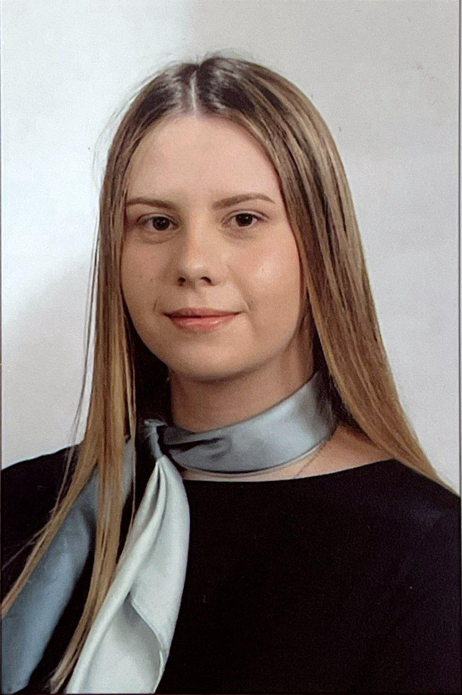

OSOBNO
Ime
Abida BiogradlijaAdresa
Zagrebačka bb.Broj telefona
060-000-000ABIDA BIOGRADLIJA
Obrazovanje
- Osnovna škola Kaćuni, Busovača
- Prva gimnazija, Zenica
- Politehnički fakultet, Zenica
Iskustvo
- Genesis Project Banja Luka- edukacija o pravima mladih, otvorenom društvu bez diskriminacija
- Razmjena učenika u sklopu organizacije Schüler Helfen Leben (SHL)
- Dvonedjeljna radiona u "Kinderdorf Pestallozi" za razvoj socijalnih vještina
- Volonter Fondacije Hastor od 2022.
- Projekat Digital Marketing. u Agenciji Zeda „Čas poduzetništva- Poduzetnik sam i ja" 2022.
- 1. mjesto na takmičenju SCI & TECH 2023.
- Volonter na HammerIT konferenciji 2023.
- Volonter na SpinIT i HammerIT konferenciji 2024.
Vještine
- Engleski jezik 5/5
- Njemacki jezik 3/5
- Web Dev
- Relacijske baze
Vratite se na POČETNU